Creative technology · ComfyUI workflow · Custom nodes · Oct 2026
Doodle to Real
A real stop-motion effect rebuilt in ComfyUI: one graph, ten custom Python nodes, and standard AI models doing only the narrowest jobs. Everything in a photo first appears as a marker doodle, then snaps into the real thing, one item at a time. Two modes, nine clips, all generated locally.
Independent study. The portrait, food, group and pet photos are supplied stock images, not mine; the landscape is a CC BY 2.5 image from Wikimedia Commons.
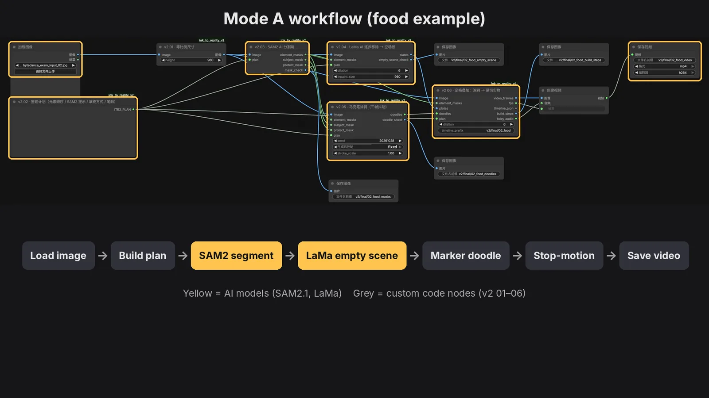
In 30 seconds
- My role
- Solo, 3 days: effect analysis, ComfyUI graph design, ten custom Python nodes, run logs, explainer film
- The goal
- Rebuild a real stop-motion effect as a reproducible AI workflow that works on very different photos: a portrait, food, pets, a group
- The constraint
- The reference was shot by placing real objects one at a time. We only get one finished photo.
- The answer
- Reverse the process: AI removes the objects, then draws them back. The last frame equals the original photo, pixel for pixel.
- ComfyUI
- Custom Python nodes
- Effect analysis
- Segmentation & inpainting
- Image editing models
- Reproducible pipelines
Nine clips, 24 fps
Mode A, five scenes: the objects in the photo are taken apart and rebuilt. Mode B, four scenes: new things are added to an untouched photo. Stroke and snap sound effects are generated by the workflow too.
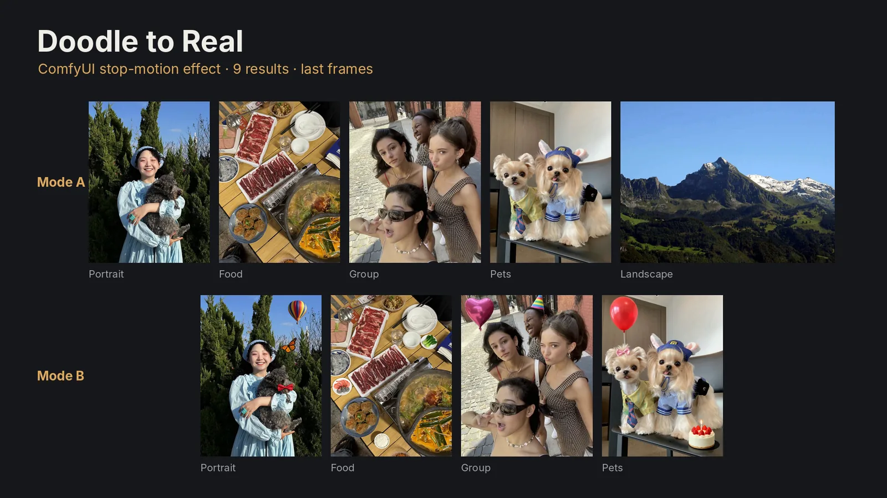
Four rules, read off the reference frame by frame
The reference clips are real stop-motion: a breakfast plate, a latte, an outfit, a bouquet. Decoding them frame by frame showed one consistent grammar.
- Start incompleteAn empty plate, a bare coaster, a person in a base layer.
- Doodle placeholderEach new element first appears as a rough marker scribble in its final position, roughly the right shape and colour, slightly jittering.
- Hard cut to realAfter 0.3–0.5 s it snaps into the real object. No dissolve, no wipe.
- Build upOne item every 0.6–0.9 s, 5–10 items, until the frame is complete. Nothing already placed ever moves.
The satisfying moment is the contrast: hand-drawn texture against photographic reality.
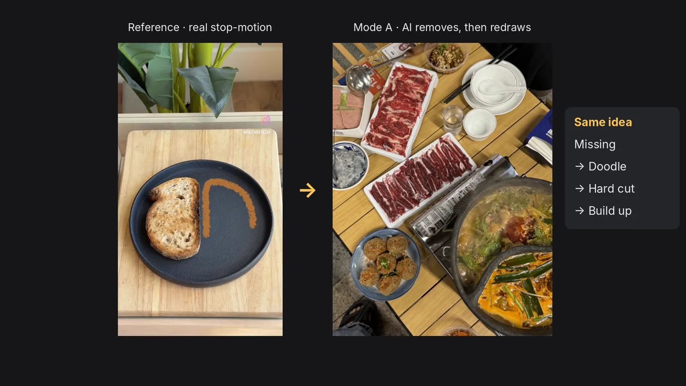
We only have one photo
The reference was shot by placing real objects one at a time. We only get a finished photo, with everything already in it. So I reversed the process and built two modes that follow the same doodle → real → build-up rhythm and share the same doodle and stop-motion nodes.
AI removes the objects to get an empty scene, then draws them back in their real order. Every “real” item is original photo pixels, so the last frame equals the original photo, pixel for pixel.
The photo stays untouched; a doodle of something that was never there is turned into a real object in place, and only the new object, with its shadow, is pasted back.
What I built in ComfyUI
The off-the-shelf parts are three models: SAM 2.1 for segmentation, LaMa for inpainting, Qwen-Image-Edit for turning a doodle into an object. Everything that makes them behave like a stop-motion effect is custom code, packaged as ComfyUI nodes so the whole thing runs as one graph, from the UI or the API, and reproduces exactly.
Mode A · one graph
- Load image
- 01 Fit size
- 02 Build plan
- 03 SAM 2 cut-outs
- 04 LaMa step removal
- 05 Marker doodle
- 06 Stop-motion build
- Create video · Save
Mode B · per added item
- B0 Doodle + crop
- B1 Prompt
- Qwen-Image-Edit
- B2 Paste back only the object
- B3 Hand over to 05 / 06
Highlighted = custom nodes (Python, in the ink_to_reality_v2 package). Each node also writes a check image, so every intermediate step can be inspected.
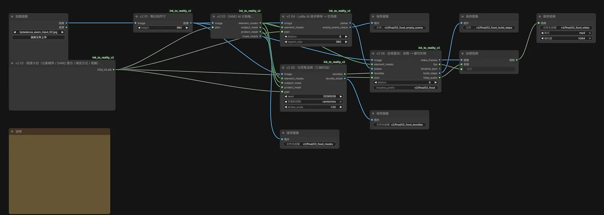
Take apart, rebuild
- Build plan (JSON)The element order, a SAM 2 box and include/exclude points per element, the fill method (LaMa or white paper), stroke style, colour, protected zones and timing.
- SAM 2.1 segmentation (AI)Cuts out every element, and every subject that must stay.
- LaMa step-by-step removal (AI)Erases elements from the last one backwards, producing an empty scene for each step. Elements underneath appear first, so the background never jumps.
- Marker doodle (procedural)Outlines plus scribble along each mask, coloured from the element’s own median colour, pushed brighter and more saturated to look like marker ink. Three versions alternate every 2 frames to mimic stop-motion jitter.
- Stop-motion build (procedural)Per item: stroke 0.125 s → doodle holds 0.38 s → hard cut to photo pixels → hold 0.3 s. It also generates stroke and snap sound effects.
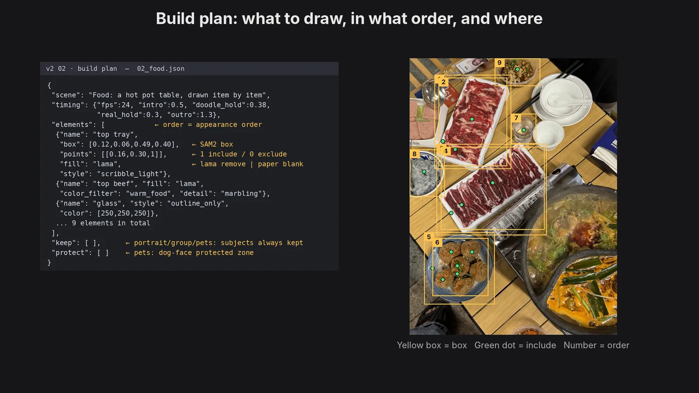
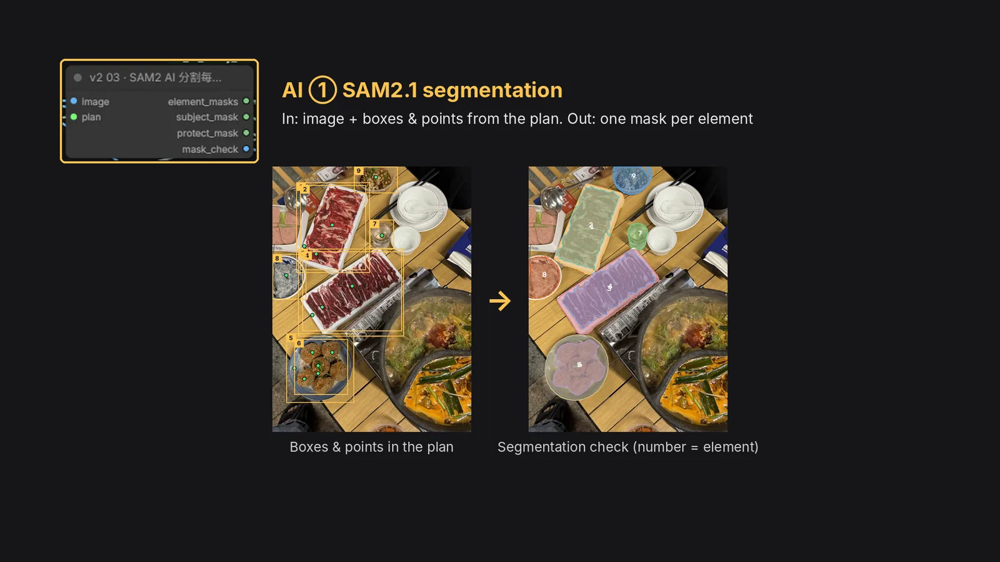
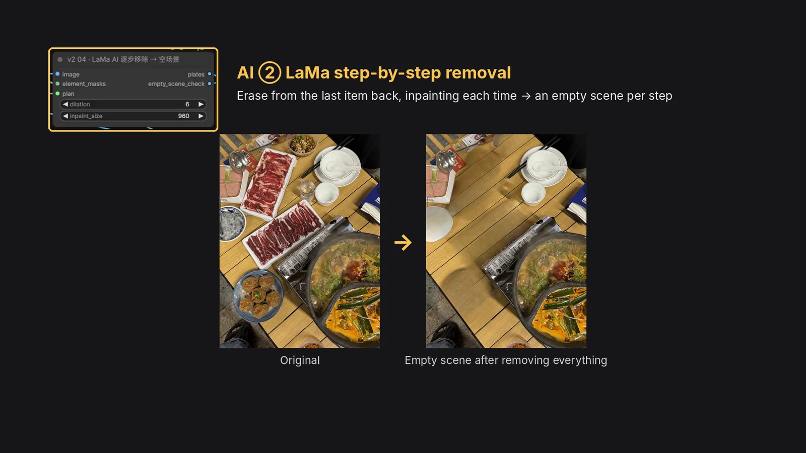
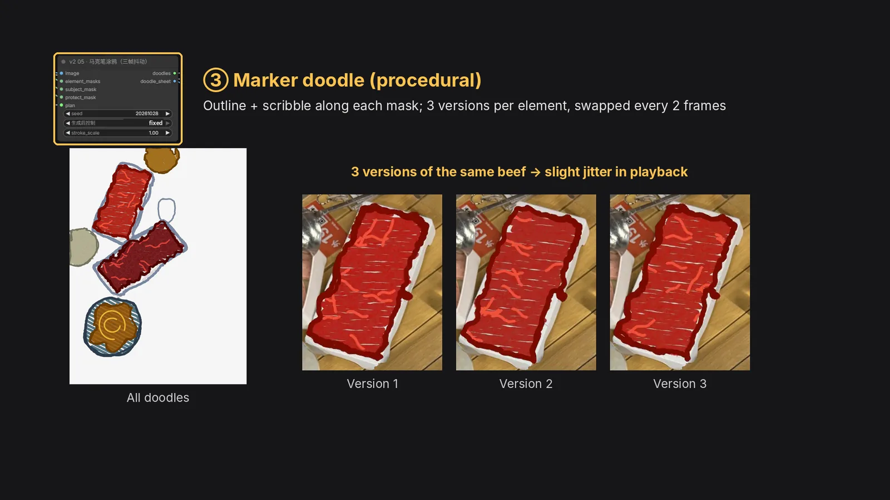
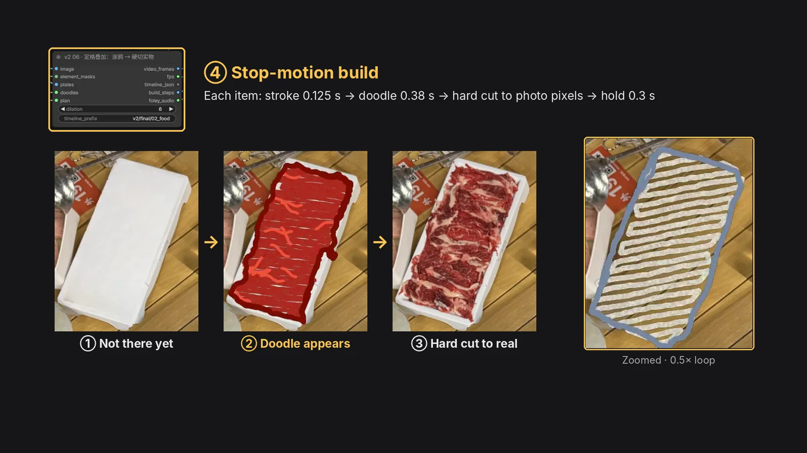
Five scenes, three starting points
| Strategy | Scenes | Starting frame |
|---|---|---|
| Object build-up | Food, pets | LaMa removes trays, meat and meatballs, or shirts, ties and hats, leaving an empty table or undressed dogs |
| White-paper scene | Portrait, group | People can’t be removed or redrawn, so they stay on white paper while the background is drawn in piece by piece |
| From scratch | Landscape (extra) | Nothing to place, so it starts from paper: sky → snow peaks → forest → meadow |
For the dogs, both faces are protected zones that never enter any mask: they stay original pixels the whole time.
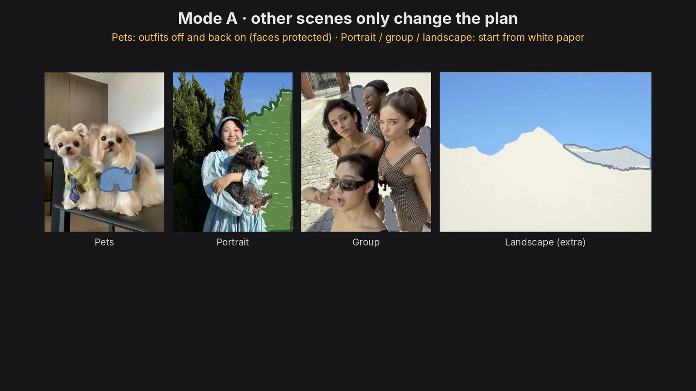
Add what was never there
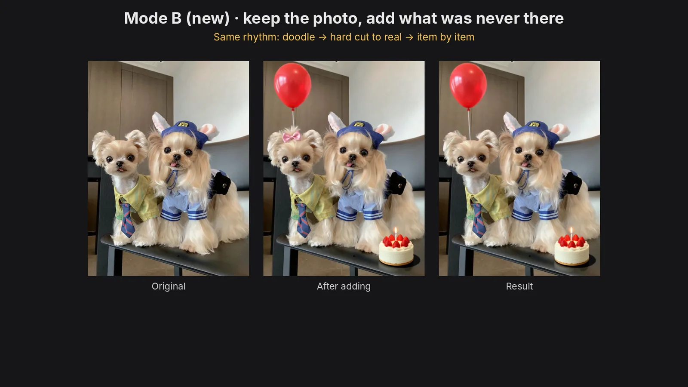
- Draw the doodleFrom the plan’s shape, then crop just the area around it. Qwen only sees that local patch, which keeps placement accurate.
- Prompt“Turn the hand-drawn doodle into a real ×××, same position and size, keep everything else unchanged.”
- Qwen-Image-Edit 2511fp8 with the official 4-step Lightning LoRA makes it real. No model or LoRA was trained.
- Paste back only the new objectAlign, cut out with SAM 2, paste back with its contact shadow, and match grain.
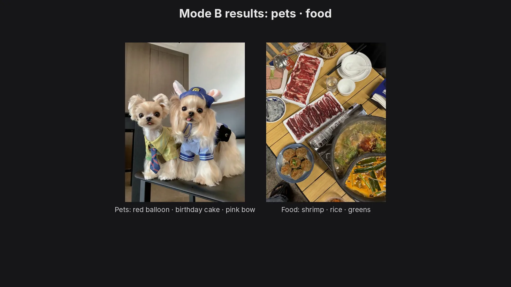
Making it look like one photo
- Alignment.Qwen slightly scales and shifts the image, so an ECC affine alignment snaps it back first.
- Completeness.The SAM 2 mask is merged with the before/after pixel difference; if the object touches the search box, the box grows and it searches again.
- Shadow.The paste-back area includes the contact shadow, with feathered edges.
- Texture.The new object is softened and given grain to match the surrounding photo.
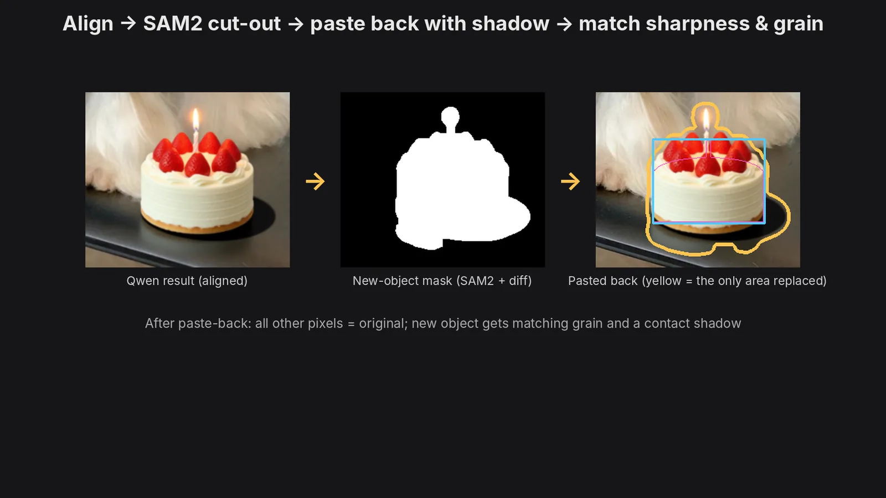
Fail loudly
Three automatic checks stop the run instead of exporting a bad result: the object is cut off, AI changed something outside the doodle, or the doodle never became a real object. Each check writes its numbers to a log.
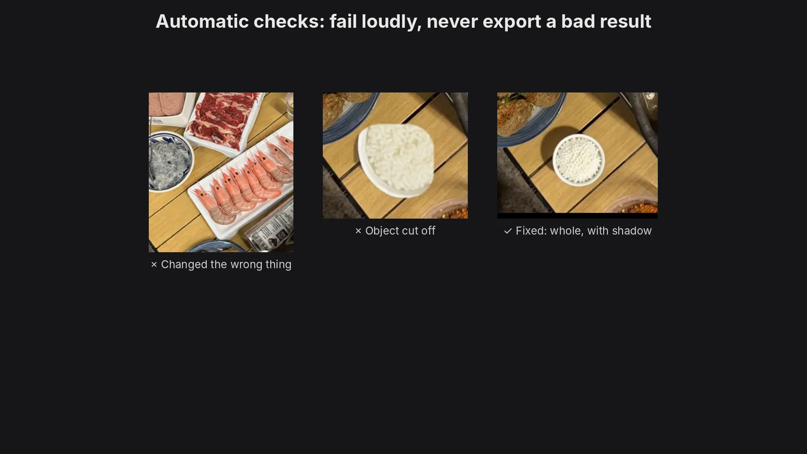
Issues I hit and fixed
- A cake placed past the table edge looked like it was floating → moved onto a full table surface, with a contact shadow required.
- A bouquet held in a hand made the AI redraw the hand, which broke when pasted back → nothing is added near hands or faces, and a keep-original zone protects them.
- Whole-image edits made the AI put objects somewhere else → only the patch around the doodle is edited.
- New objects were sharper than the photo → sharpness and grain matching.
That’s also why the group shot only gets two additions, heart balloons above and party hats on top, so the lower half stays identical to the original.
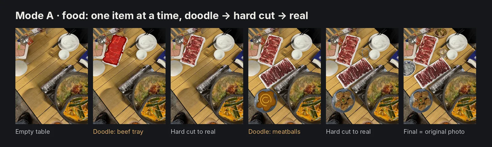
Reproducible, and honest about what it can’t do
- Reproducible.Every run has a ComfyUI prompt ID. Food and pets were re-run independently and every decoded frame matched pixel for pixel; running the delivered workflow from the UI matched the API run. The package contains UI and API workflows, build plans, custom node source, run logs and process images.
- Not fully automatic.Each new photo needs a hand-written build plan: order, boxes, doodle shapes, what to add.
- Inpainting shows.Empty scenes are inpainted, so a few in-between frames show slight artefacts; white-paper subjects have SAM 2 soft edges.
- Mode B can miss.Qwen sometimes ignores the doodle position; the checks catch it, and it needs a new seed or a plan tweak.
What I’d take forward
The most useful decision was treating “only one photo” as a design constraint rather than a problem: reversing the stop-motion process kept every final object real, and the second mode extended the same grammar into something closer to how template products are actually used, adding a little magic to a photo. Keeping AI to the narrowest possible job (segment, inpaint, edit one patch) and checking every step is what made the results consistent.
Independent study. The portrait, food, group and pet photos are supplied stock images, not mine; the landscape is a CC BY 2.5 image from Wikimedia Commons.